Housing Data
Jefferson Ong, Jayne Hollar, Céline Prunet
May 09, 2020 at 10:12:57 PM
library(readxl)
library(tidyverse)
house <- read_excel("Housing.xlsx")Data Summary:
Examine the statistics and values for each variable. Are any missing? Do any values need clarification or modification? If so, why and what did you do?
str(house)
summary(house)
which(is.na(house))- None are missing in the data frame
Do any values need clarification or modification?
- Yes, status and elem should be a factor rather than just characters.
house$status <- as.factor(house$status)
house$elem <- as.factor(house$elem)
str(house)## tibble [76 × 11] (S3: tbl_df/tbl/data.frame)
## $ id : num [1:76] 1 2 3 4 5 6 7 8 9 10 ...
## $ price : num [1:76] 388 450 386 350 156 ...
## $ size : num [1:76] 2.18 2.05 2.11 1.44 1.8 ...
## $ lot : num [1:76] 4 5 5 6 1 5 4 4 4 5 ...
## $ bath : num [1:76] 3 3 2 1 2 2 1.1 2 2.1 2.1 ...
## $ bedrooms : num [1:76] 4 4 4 2 4 3 4 4 4 3 ...
## $ yearbuilt : num [1:76] 1940 1957 1955 1956 1994 ...
## $ agestandardized: num [1:76] -3 -1.3 -1.5 -1.4 2.4 -3 -1.2 -0.9 -0.5 -0.2 ...
## $ garagesize : num [1:76] 0 2 2 1 1 1 1 2 2 2 ...
## $ status : Factor w/ 3 levels "act","pen","sld": 3 3 3 1 3 3 1 3 1 3 ...
## $ elem : Factor w/ 6 levels "adams","crest",..: 4 4 4 1 1 1 6 6 6 6 ...Exploratory Data Analysis:
Scatterplot
plot(house[1:9])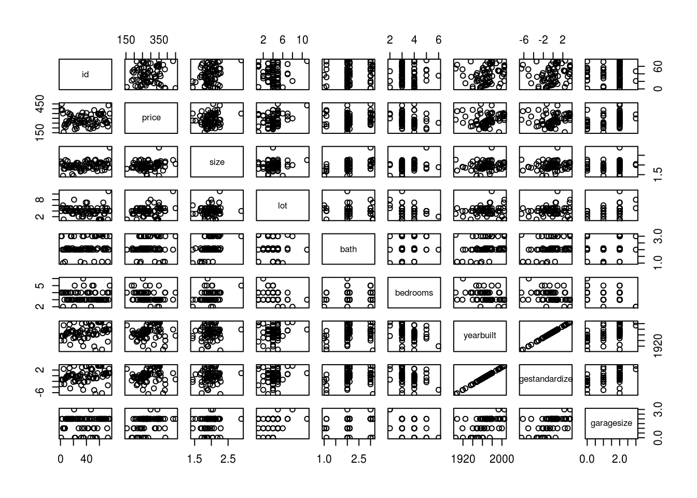
- If we look at the second row of this multi-scatterplot, we can see the relationship of price as y against all the other variables individually. We can see that bath, bedroom, garagesize, and status are discrete variables. We can consider them as factors where a house’s bathroom will either have 1, 2, or 3 bathrooms but for now we won’t, in an extreme case of a house having more than 3 bathroom. Where as a house can only have three states.
Correlation plot
library("PerformanceAnalytics")
chart.Correlation(house[, c(1:9)], histogram=TRUE, pch=19)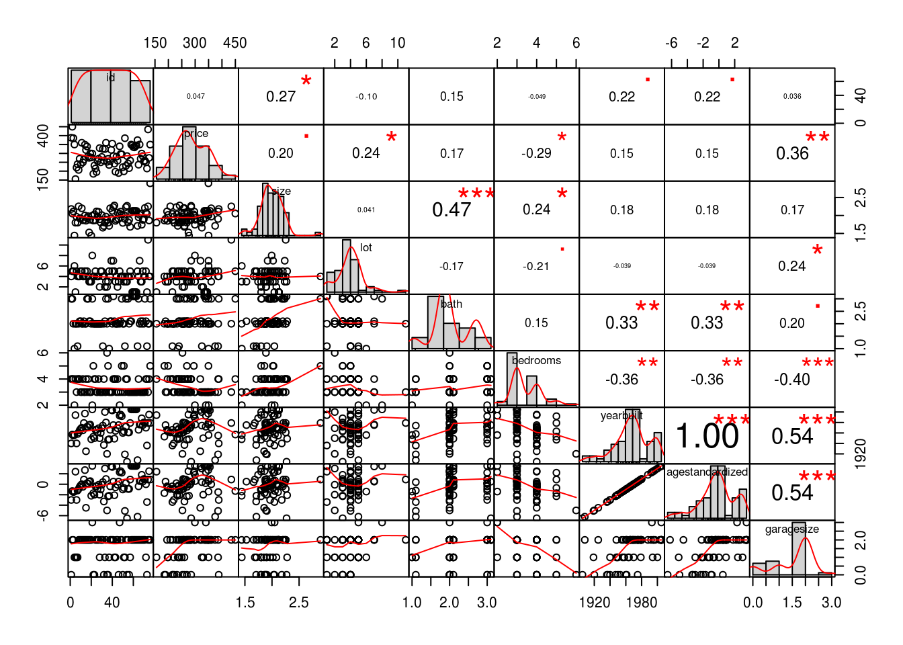
- id: 0.04662108
- price: 1.00000000
- size: 0.20143783
- lot: 0.24423228
- bath: 0.1746578
- bedrooms: -0.28619746
- yearbuilt: 0.15412476
- agestandardized: 0.15412476
- garagesize: 0.3583861
Here we can see that price as a single predictor against the other variables. We can see that individually each predictor doesn’t correlate strongly to price. Examine some of the variables relationships with price to help you determine which variables might be useful in an initial model. Explain your conclusions from this initial screening.
We can see that the promising predictor variables are garagesize, lot, bedrooms(negatively). We can look further in size, bath, yearbuilt/agestandardized if we need more predictors. It makes sense that id doesn’t predict anythign since its just an index and that yearbuilt and agestandardized are the same since agestandardized is just a transformation of yearbuilt.
test <- house %>%
select(bedrooms, price) %>%
arrange(bedrooms)
plot(test)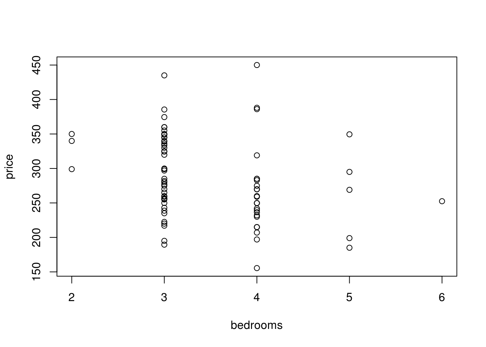
- We wanted to see why bedroom is negatively correlated since it’s not intuitive that having more bedrooms mean that the house is a lower price. We can see from the scatterplot that houses that have 4 or more bedrooms typically cost less than the 2 or 3 bedroom counterparts.
Outliers
OutVals = boxplot(house$size, plot = T, main = "size")$out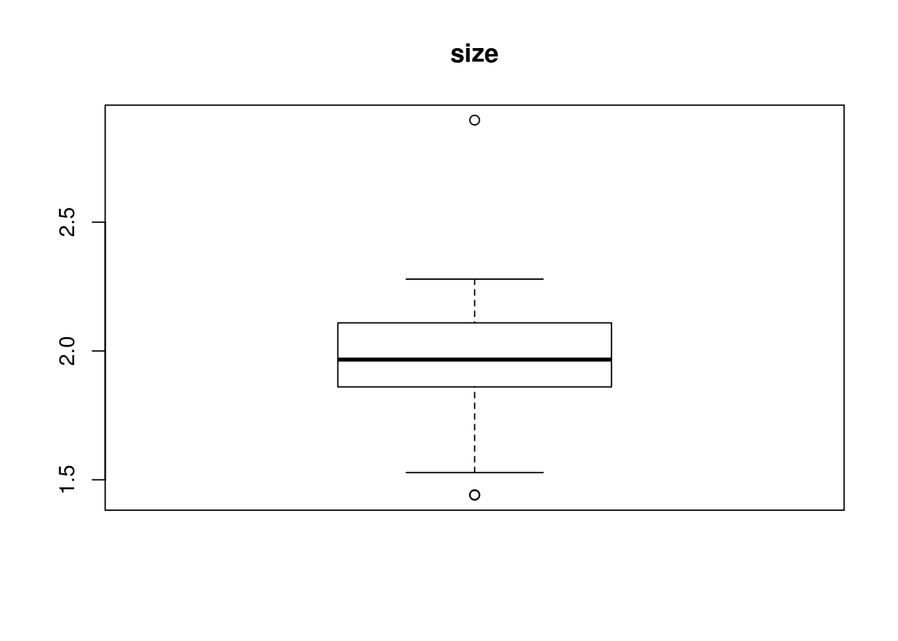
which(house$size %in% OutVals)[1] 4 20 76OutVals = boxplot(house$lot, plot = T, main = "lot")$out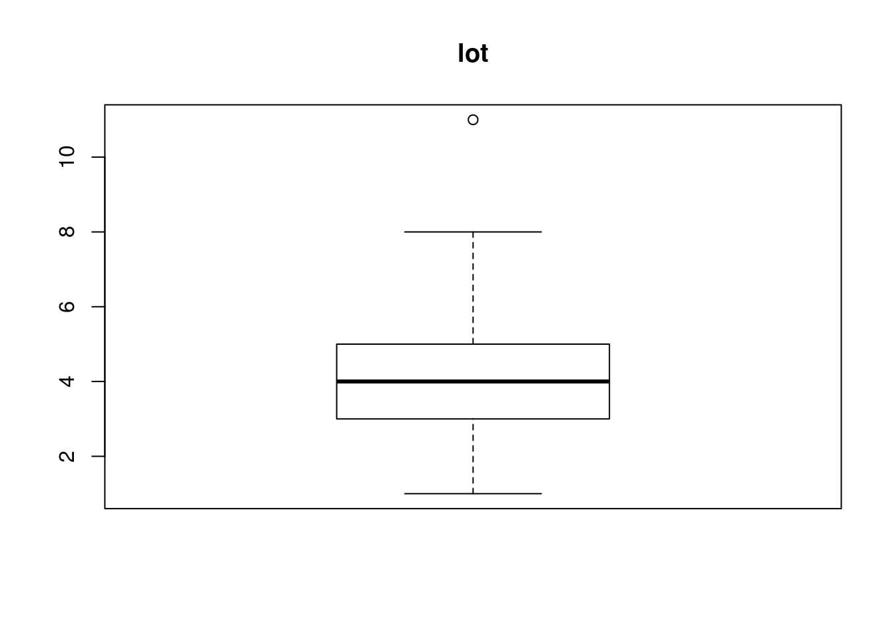
which(house$lot %in% OutVals)[1] 74OutVals = boxplot(house$bath, plot = T, main = "bath")$out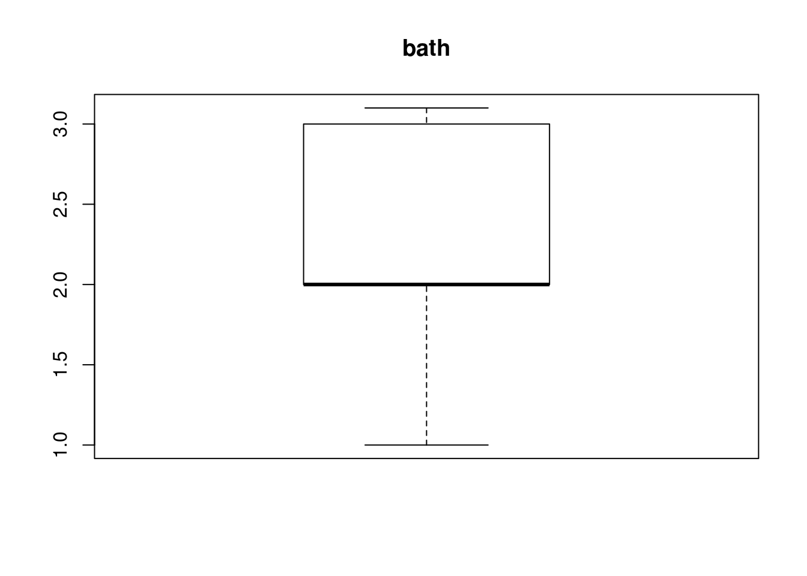
which(house$bath %in% OutVals)integer(0)OutVals = boxplot(house$bedrooms, plot = T, main = "bedrooms")$out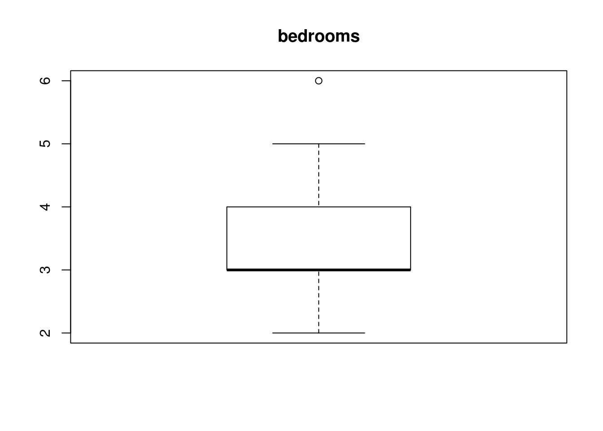
which(house$bedrooms %in% OutVals)[1] 35OutVals = boxplot(house$yearbuilt, plot = T, main = "year built")$out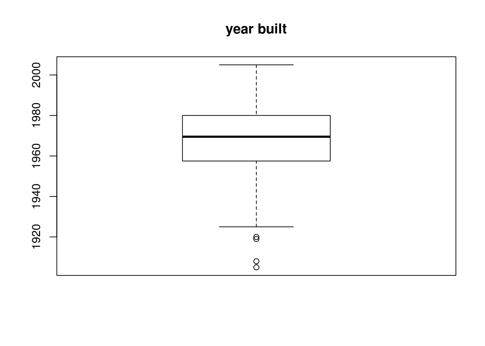
which(house$yearbuilt %in% OutVals)[1] 35 52 54 64OutVals = boxplot(house$garagesize, plot = T, main = "garage size")$out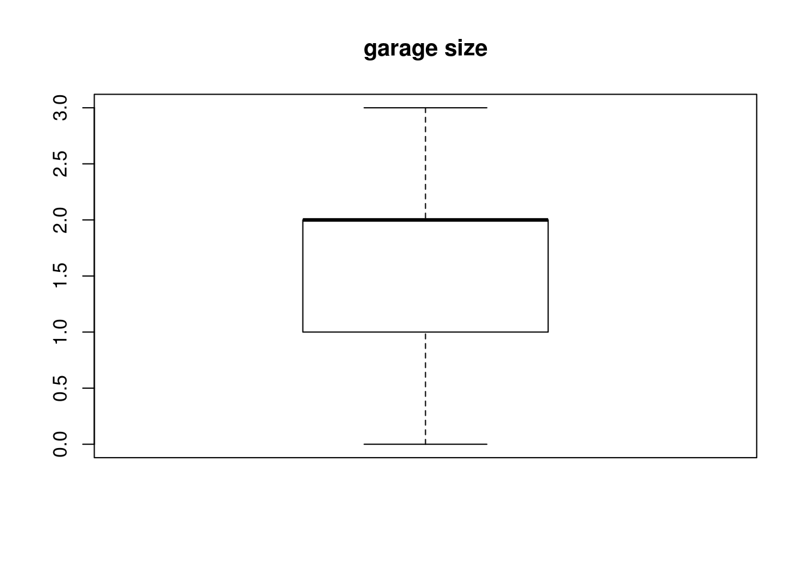
which(house$garagesize %in% OutVals)integer(0)- We went ahead and look at size, lot, bath, bedroom, yearbuilt, and garagesize for outliers since id is just an index, price because it’s what we’re trying to predict, and agestandardized as it will give the same as yearbuilt. Boxplot would not be appropriate in for status and elem since it wouldn’t make sense.
house$size[c(4, 20, 76)][1] 1.442 1.440 2.896house$lot[c(74)][1] 11#house$bath
house$bedrooms[c(35)][1] 6house$yearbuilt[c(35, 52, 54, 64)][1] 1920 1919 1905 1908#house$garagesize- We then looked at the individual points to see if the data can explain why these particular points are outliers. We found that houses built before the 1920 has the 6 bedroom home which explains some of the negative correlation between price and bedroom numbers. An intuition would be that older homes, especially those before the 1920s will cost more and have more bedrooms.
house[c(74, 76),]# A tibble: 2 x 11
id price size lot bath bedrooms yearbuilt agestandardized garagesize
<dbl> <dbl> <dbl> <dbl> <dbl> <dbl> <dbl> <dbl> <dbl>
1 74 435 2.25 11 2 3 1979 0.9 2
2 76 350. 2.90 4 3 5 1979 0.9 2
# … with 2 more variables: status <fct>, elem <fct>- We then looked at the row 74 and 76 since 74 had a particuarly large lot and 76 had a huge size. We found that theres nothing apparent that would explain this deviation and decided to remove them because of this. They aren’t representative of the data at hand. We will also remove id as it isn’t needed for our analysis
house <- house[-c(74,76), ]
house <- subset(house, select = -id )
str(house)tibble [74 × 10] (S3: tbl_df/tbl/data.frame)
$ price : num [1:74] 388 450 386 350 156 ...
$ size : num [1:74] 2.18 2.05 2.11 1.44 1.8 ...
$ lot : num [1:74] 4 5 5 6 1 5 4 4 4 5 ...
$ bath : num [1:74] 3 3 2 1 2 2 1.1 2 2.1 2.1 ...
$ bedrooms : num [1:74] 4 4 4 2 4 3 4 4 4 3 ...
$ yearbuilt : num [1:74] 1940 1957 1955 1956 1994 ...
$ agestandardized: num [1:74] -3 -1.3 -1.5 -1.4 2.4 -3 -1.2 -0.9 -0.5 -0.2 ...
$ garagesize : num [1:74] 0 2 2 1 1 1 1 2 2 2 ...
$ status : Factor w/ 3 levels "act","pen","sld": 3 3 3 1 3 3 1 3 1 3 ...
$ elem : Factor w/ 6 levels "adams","crest",..: 4 4 4 1 1 1 6 6 6 6 ...- The variables: size, lot, bedrooms, yearbuilt/agestandardized has outliers
Initial Modeling:
model1 <- lm(price ~. -agestandardized , house)
summary(model1)
Call:
lm(formula = price ~ . - agestandardized, data = house)
Residuals:
Min 1Q Median 3Q Max
-90.440 -28.267 -3.084 25.464 105.416
Coefficients:
Estimate Std. Error t value Pr(>|t|)
(Intercept) 134.51524 652.40740 0.206 0.83735
size 53.86491 35.98329 1.497 0.13965
lot 5.48249 4.24177 1.293 0.20114
bath 9.28329 11.71581 0.792 0.43127
bedrooms -13.29101 9.06656 -1.466 0.14789
yearbuilt 0.01577 0.32888 0.048 0.96191
garagesize 10.42915 9.34539 1.116 0.26889
statuspen -13.71117 16.37471 -0.837 0.40573
statussld -37.64023 13.91346 -2.705 0.00887 **
elemcrest 4.82206 33.49879 0.144 0.88602
elemedge 0.65773 28.80361 0.023 0.98186
elemedison 83.25149 30.26369 2.751 0.00785 **
elemharris 46.11221 30.42429 1.516 0.13486
elemparker -8.86534 29.99090 -0.296 0.76856
---
Signif. codes: 0 '***' 0.001 '**' 0.01 '*' 0.05 '.' 0.1 ' ' 1
Residual standard error: 43.92 on 60 degrees of freedom
Multiple R-squared: 0.5297, Adjusted R-squared: 0.4278
F-statistic: 5.199 on 13 and 60 DF, p-value: 4.292e-06Using your conclusions from the exploratory data analysis, build a regression model and report your findings.
We can see that the model isn’t just random and does explain the price in someway, by the p-value on the F-statistic.
F-statistic: 5.118 on 13 and 59 DF, p-value: 5.685e-06.
The model also explains about 53% of the variability in price, using the Multiple R-squared: 0.53. however this is inflated due to the sheer amount of predictors that we are using, looking at the Adjusted R-squared: 0.4264 means that it should only be about 42%.
We can see that most of the significant predictors depend on the school district and status 3(whether the house is listed). There is also NA values for the agestandardized which makes sense since it’s the same as yearbuilt and adds nothing to the model.
Model Modification:
Consider modifying your model based upon your initial results and/or diagnostic plots from the model. Explain any modifications that you are making. Consider variance inflation factors for each predictor in your model and comment on that in your model selection process.
library(car)
vif(model1) GVIF Df GVIF^(1/(2*Df))
size 1.629861 1 1.276660
lot 1.447221 1 1.203005
bath 1.688067 1 1.299256
bedrooms 1.626480 1 1.275335
yearbuilt 2.310691 1 1.520096
garagesize 2.005255 1 1.416070
status 1.687671 2 1.139782
elem 2.841724 5 1.110090- Using the GVIF^(1/(2*Df)) since elem has 5 coefficients and status has df 2, for all the different factors. There isn’t much multicollinearity between the predictor variables.
model2 <- lm(price ~. -agestandardized -yearbuilt -bath -lot -garagesize, house)
summary(model2)
Call:
lm(formula = price ~ . - agestandardized - yearbuilt - bath -
lot - garagesize, data = house)
Residuals:
Min 1Q Median 3Q Max
-88.973 -25.321 -2.025 25.832 130.000
Coefficients:
Estimate Std. Error t value Pr(>|t|)
(Intercept) 195.485 60.858 3.212 0.00206 **
size 78.424 31.368 2.500 0.01499 *
bedrooms -19.763 7.791 -2.537 0.01364 *
statuspen -13.160 16.142 -0.815 0.41794
statussld -45.721 13.154 -3.476 0.00092 ***
elemcrest 10.841 33.495 0.324 0.74725
elemedge 9.657 28.350 0.341 0.73449
elemedison 88.205 29.473 2.993 0.00392 **
elemharris 48.962 29.637 1.652 0.10342
elemparker -1.809 29.857 -0.061 0.95187
---
Signif. codes: 0 '***' 0.001 '**' 0.01 '*' 0.05 '.' 0.1 ' ' 1
Residual standard error: 44.24 on 64 degrees of freedom
Multiple R-squared: 0.4909, Adjusted R-squared: 0.4193
F-statistic: 6.856 on 9 and 64 DF, p-value: 7.769e-07vif(model2) GVIF Df GVIF^(1/(2*Df))
size 1.220356 1 1.104697
bedrooms 1.183316 1 1.087803
status 1.390658 2 1.085938
elem 1.452477 5 1.038032We then started to remove predictor variables base on the highest p value on their individual t statistic. While also keeping in mind the vif at each iteration on whether one would show multicollinearity, this is not occur. After removing yearbuilt and bath we saw size became significant. When we removed lot bedroom started to show that it might be significant and finally removing garagesize, we end up with a model where all the predictors are significant.
The p value on the f-statistic shows us this is a significant model overall with a R^2 of 49%, adjusted of 42%.
par(mfrow = c(2,2))
plot(model2)
house[4,]# A tibble: 1 x 10
price size lot bath bedrooms yearbuilt agestandardized garagesize status
<dbl> <dbl> <dbl> <dbl> <dbl> <dbl> <dbl> <dbl> <fct>
1 350 1.44 6 1 2 1956 -1.4 1 act
# … with 1 more variable: elem <fct>- Again we see that this is the house with 6 bedrooms that we decided to keep earlier on. We can see from the plot diagnostics that we aren’t violating any underlying assumptions for linear regression modelling.
model3 <- lm(price ~. -agestandardized -yearbuilt -bath -lot -garagesize + agestandardized:size, house)
summary(model3)
Call:
lm(formula = price ~ . - agestandardized - yearbuilt - bath -
lot - garagesize + agestandardized:size, data = house)
Residuals:
Min 1Q Median 3Q Max
-91.001 -25.479 -1.336 25.801 126.792
Coefficients:
Estimate Std. Error t value Pr(>|t|)
(Intercept) 196.287 61.132 3.211 0.00208 **
size 74.545 32.027 2.328 0.02316 *
bedrooms -17.784 8.359 -2.127 0.03730 *
statuspen -13.213 16.211 -0.815 0.41810
statussld -43.926 13.478 -3.259 0.00180 **
elemcrest 11.094 33.641 0.330 0.74266
elemedge 8.225 28.552 0.288 0.77425
elemedison 91.547 30.014 3.050 0.00334 **
elemharris 45.614 30.178 1.512 0.13566
elemparker -3.041 30.041 -0.101 0.91969
size:agestandardized 1.003 1.492 0.672 0.50383
---
Signif. codes: 0 '***' 0.001 '**' 0.01 '*' 0.05 '.' 0.1 ' ' 1
Residual standard error: 44.43 on 63 degrees of freedom
Multiple R-squared: 0.4945, Adjusted R-squared: 0.4143
F-statistic: 6.163 on 10 and 63 DF, p-value: 1.756e-06par(mfrow = c(2,2))
plot(model3)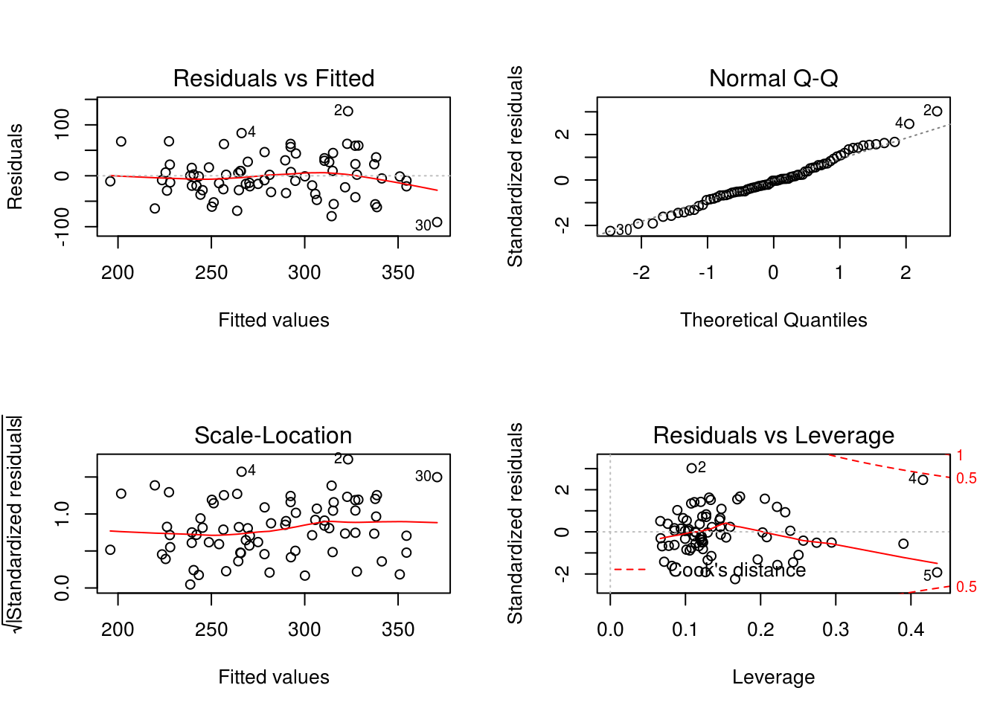
model4 <- lm(log(price) ~. -agestandardized -yearbuilt -bath -lot -garagesize, house)
summary(model4)
Call:
lm(formula = log(price) ~ . - agestandardized - yearbuilt - bath -
lot - garagesize, data = house)
Residuals:
Min 1Q Median 3Q Max
-0.28833 -0.08378 -0.00452 0.08781 0.36940
Coefficients:
Estimate Std. Error t value Pr(>|t|)
(Intercept) 5.31581 0.21388 24.854 < 2e-16 ***
size 0.26461 0.11024 2.400 0.019297 *
bedrooms -0.07492 0.02738 -2.736 0.008028 **
statuspen -0.05673 0.05673 -1.000 0.321045
statussld -0.17636 0.04623 -3.815 0.000309 ***
elemcrest 0.09411 0.11771 0.799 0.426984
elemedge 0.08765 0.09963 0.880 0.382294
elemedison 0.35659 0.10358 3.443 0.001020 **
elemharris 0.22717 0.10415 2.181 0.032855 *
elemparker 0.04825 0.10493 0.460 0.647197
---
Signif. codes: 0 '***' 0.001 '**' 0.01 '*' 0.05 '.' 0.1 ' ' 1
Residual standard error: 0.1555 on 64 degrees of freedom
Multiple R-squared: 0.5106, Adjusted R-squared: 0.4417
F-statistic: 7.418 on 9 and 64 DF, p-value: 2.502e-07par(mfrow = c(2,2))
plot(model4)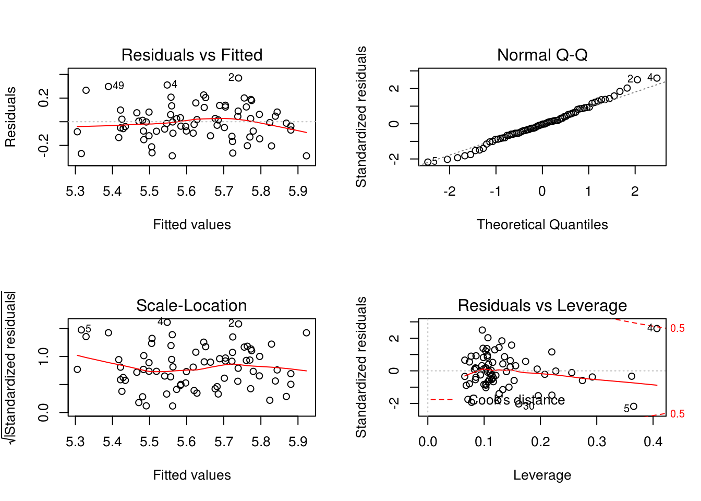 Here we’ve looked at the interaction term that we thought we be significant earlier from looking at the data. We find out that is it not.
We applied a transformation on the Y response variable, seeing if it will yield to better plot diagnostics. It doesn’t change much for the most part aside from the residual vs fitted plot being more spread out but curving more drastically.
model4 <- lm(price ~ elem + status + I(size /100) + bedrooms, house)
summary(model4)
Call:
lm(formula = price ~ elem + status + I(size/100) + bedrooms,
data = house)
Residuals:
Min 1Q Median 3Q Max
-88.973 -25.321 -2.025 25.832 130.000
Coefficients:
Estimate Std. Error t value Pr(>|t|)
(Intercept) 195.485 60.858 3.212 0.00206 **
elemcrest 10.841 33.495 0.324 0.74725
elemedge 9.657 28.350 0.341 0.73449
elemedison 88.205 29.473 2.993 0.00392 **
elemharris 48.962 29.637 1.652 0.10342
elemparker -1.809 29.857 -0.061 0.95187
statuspen -13.160 16.142 -0.815 0.41794
statussld -45.721 13.154 -3.476 0.00092 ***
I(size/100) 7842.351 3136.758 2.500 0.01499 *
bedrooms -19.763 7.791 -2.537 0.01364 *
---
Signif. codes: 0 '***' 0.001 '**' 0.01 '*' 0.05 '.' 0.1 ' ' 1
Residual standard error: 44.24 on 64 degrees of freedom
Multiple R-squared: 0.4909, Adjusted R-squared: 0.4193
F-statistic: 6.856 on 9 and 64 DF, p-value: 7.769e-07par(mfrow = c(2,2))
plot(model4)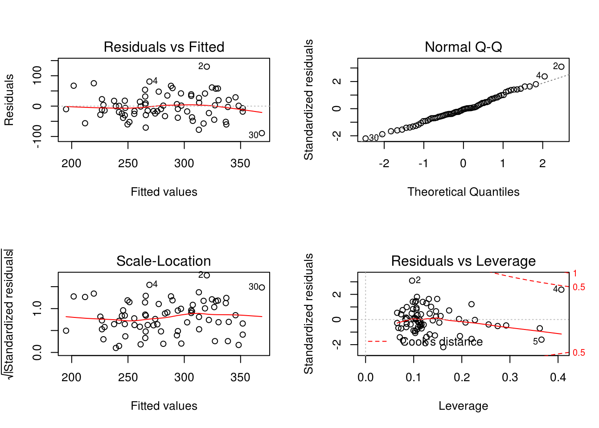
- We applied a transformation on size to see changes in the plot diagnostics. We can see that changes in the predictor variables does not have any affects on it’s significances.
Conclusions:
Present your final model and diagnostic plots in support of that final model. In that presentation of the final model, comment on the R-squared value and its interpretation, give 95% confidence intervals for each of the β coefficients in your model, and illustrate your model’s use with a 95% confidence interval for the mean response and a 95% prediction interval for individual response for a hypothetical house of your choosing.
modelf <- lm(price ~ elem + status + size + bedrooms, house)
summary(modelf)
Call:
lm(formula = price ~ elem + status + size + bedrooms, data = house)
Residuals:
Min 1Q Median 3Q Max
-88.973 -25.321 -2.025 25.832 130.000
Coefficients:
Estimate Std. Error t value Pr(>|t|)
(Intercept) 195.485 60.858 3.212 0.00206 **
elemcrest 10.841 33.495 0.324 0.74725
elemedge 9.657 28.350 0.341 0.73449
elemedison 88.205 29.473 2.993 0.00392 **
elemharris 48.962 29.637 1.652 0.10342
elemparker -1.809 29.857 -0.061 0.95187
statuspen -13.160 16.142 -0.815 0.41794
statussld -45.721 13.154 -3.476 0.00092 ***
size 78.424 31.368 2.500 0.01499 *
bedrooms -19.763 7.791 -2.537 0.01364 *
---
Signif. codes: 0 '***' 0.001 '**' 0.01 '*' 0.05 '.' 0.1 ' ' 1
Residual standard error: 44.24 on 64 degrees of freedom
Multiple R-squared: 0.4909, Adjusted R-squared: 0.4193
F-statistic: 6.856 on 9 and 64 DF, p-value: 7.769e-07par(mfrow = c(2,2))
plot(modelf)After looking at the transformation on the on the response, interaction terms, and some of the predictor variables. We did not find anything compelling that would improve the model from what we already had.
The R^2 value is 0.4909 which mean that the model explains about 49% of the variation. Looking at the adjusted R^2 of 0.4193 we’re penalized by the amount of variables in the model.
confint(modelf, level = .95) 2.5 % 97.5 %
(Intercept) 73.90789 317.062309
elemcrest -56.07266 77.754847
elemedge -46.97820 66.292616
elemedison 29.32650 147.083452
elemharris -10.24411 108.167339
elemparker -61.45455 57.836119
statuspen -45.40613 19.086839
statussld -71.99990 -19.442006
size 15.75956 141.087464
bedrooms -35.32660 -4.198871These are the β coefficients in your model, we are 95% confident that the actual mean data point is between the 2.5% and 97.5% values.
We can be 95% confident that the actual mean price value for elemcrest is between -$56.1K to $77.8K.
We can be 95% confident that the actual mean price value for elemedge is between -$47.0K to $66.3K.
We can be 95% confident that the actual mean price value for elemedison is between $29.3K to $147.1K.
We can be 95% confident that the actual mean price value for elemharris is between -$10.2K to $108.2K.
We can be 95% confident that the actual mean price value for elemparker is between -$45.4K to $19.1K.
We can be 95% confident that the actual mean price value for statuspen is between -$72.0K to -$19.4K.
We can be 95% confident that the actual mean price value for statussld is between $19.4K to $72.0K.
We can be 95% confident that the actual mean price value for size is between $15.8K to $141.1K.
We can be 95% confident that the actual mean price value for bedrooms is between -$35.3K to -$4.2K.
newhouse <- data.frame(size = 2, bedrooms = 4, status = "pen", elem = "crest")
predict(modelf, newdata = newhouse, interval = 'confidence') fit lwr upr
1 270.9626 219.8833 322.0419- $271.0K is the point estimate for this particular house.
- Based on the model centered around the mean prediction values, we can be 95% confident the true mean home price is between $220.0K to $322.0K
newhouse <- data.frame(size = 2, bedrooms = 4, status = "pen", elem = "crest")
predict(modelf, newdata = newhouse, interval = 'predict') fit lwr upr
1 270.9626 168.8784 373.0468- $271.0K is the point estimate for future houses
- Based on the model centered around the point estimate, we expect a future home built to have a price of $168.9K to $373.0K 95% of the time and 5% of the time to have a price outside this range.